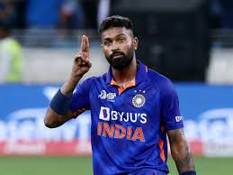

Hardik Pandya
1993-Present
"Hardik Pandya: The fearless all-rounder who redefines cricketing dynamism!"
Hardik Himanshu Pandya born on 11 October 1993 is an Indian international cricketer who plays for the Indian cricket team. An all-rounder who bats right-handed in the middle-order and bowls right-arm fast-medium deliveries. He is currently one of the best all-rounders in the world in white-ball cricket. Pandya has represented India in all 3 formats. He captains Mumbai Indians in the Indian Premier League (IPL). He occasionally plays for his regional team Baroda in domestic cricket. He captained Indian team for some time and was the vice captain of the team that won the 2024 T20 World Cup, where he bowled the last match-winning over in the final..
Biographies
- "Hardik Pandya: Indian Cricketer"
- "Hardik Pandya Colour: Indian Cricketer"
- "Cricketer Hardik Pandya"
- "Hardik Pandya Colour"